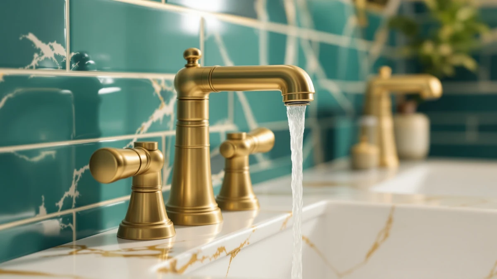

Best Centerset Bathroom Faucets of 2026: 4-Inch Picks That Fit
Prices and picks verified as of August 2026. Independent, reader-supported reviews.


Quick Answer
For most 4-inch counters, the Hurran Bathroom Faucets for Sink 3 is the best centerset bathroom faucet for the money at $28.99, with a brass body and a straightforward two-handle install. If you want a specific finish, spout style, or a bigger name brand, we compared seven other centerset options below by price, material, and verified owner reviews.
Our pick: Bathroom Faucets for Sink 3, $28.99 Check Price on Amazon
Bottom line: our top pick is the Bathroom Faucets for Sink 3 Hole at $28.99. The best budget option is the KPW Bathroom Sink Faucet 2 or 3 Hole Matte Black Centerset 4 at $19.99.
Things to Know Before You Buy
- Measure your holes first. The best centerset bathroom faucets are built for three holes spaced about 4 inches apart, center to center. If your counter measures closer to 8 inches, you need a widespread or single-handle faucet instead.
- Every pick here uses a brass body. Brass resists corrosion in a humid bathroom far better than a zinc body with a plated finish, so we filtered out zinc-only listings before comparing anything else.
- Prices in this guide span $19.99 to $53.98. A higher price does not always buy a longer warranty or a better cartridge on Amazon listings, so read the material and finish details on each product page before assuming the pricier option is the better one.
- Finish changes the maintenance, not just the look. Chrome and polished finishes show water spots quickly, while matte black and brushed finishes hide them better between cleanings.
- Check the handle count. Most centerset faucets ship with two separate handles for hot and cold, but confirm this against the listing photos if precise temperature control matters to you.
Finding the best centerset bathroom faucets starts with a tape measure, not a finish preference. Centerset faucets fit a specific hole pattern, three holes spaced about 4 inches apart, and that single detail rules out most of the widespread and single-hole options you will see mixed into general faucet listings. We compared eight faucets built for that exact spread, priced from $19.99 to $53.98, and ranked them on brass construction, finish, spout style, and what verified buyers say after living with them.
The Hurran Bathroom Faucets for Sink 3 tops this list because it hits the price and material balance most shoppers want: a brass body built for the standard 4-inch spread at $28.99, with no premium finish tax attached. If your bathroom calls for something specific, a matte black finish, a waterfall spout, or a name brand like Moen, we cover those angles in the picks below and note where each one costs you more without adding function.
None of the faucets in this guide are widespread or single-hole models, and we did not stretch the definition of centerset to pad the list. Every product below is sized for a 4-inch counter, uses a brass core, and ships with the mounting hardware to seal against the deck. You will also find honest drawbacks for each pick, since a $19.99 faucet and a $53.98 faucet from the same seller rarely justify their price gap with equal clarity.
Why You Should Trust Us
I am Ilane Tall, and I cover bathroom fixtures and hardware for Best Bathroom Faucets. Picking the best centerset bathroom faucets is not a matter of taste. It comes down to hole spacing, brass quality, and whether the finish holds up, and we research those details from product listings, manufacturer specs, and verified buyer feedback rather than guessing from a photo.
We buy nothing from the brands we cover and no manufacturer pays for a spot on this list. Every Amazon link on this page is affiliate-tagged, which is how the site earns a small commission if you buy through it, and that arrangement never changes which faucet we rank first. When a cheaper faucet does the job as well as a pricier one, we say so.
How We Picked
We started by filtering the Amazon marketplace for faucets confirmed to fit a 4-inch centerset spread, since that single spec determines whether a faucet will physically mount on your counter. Widespread and single-hole listings that occasionally show up in centerset search results were removed from consideration.
From the remaining pool, we weighted brass construction over cheaper zinc-body alternatives, since brass resists corrosion far longer in a wet bathroom environment. We also looked for a spread of price points and finishes, from a $19.99 budget pick to a $48.38 option from an established brand, so this guide covers shoppers working with different budgets and different bathroom styles.
How We Compared
We compared each of the eight best centerset bathroom faucets in this guide side by side on price, listed materials, finish, spout style, and handle configuration, pulling specs directly from the product listings rather than marketing copy. Where a brand publishes a warranty or cartridge policy, we noted it; where a listing left a detail vague, such as spout reach or exact finish durability, we flagged that as a gap rather than filling it in with a guess.
We also read through verified owner reviews for each pick, looking for recurring complaints about leaks, loose handles, or finish wear, and recurring praise for easy installation or a solid feel at the price. That combination of specs and owner feedback is what shaped the rankings and the honest drawbacks listed for every faucet below.
Our Picks

Bathroom Faucets for Sink 3
What we like
- Brass body priced at $28.99, among the least expensive picks in this guide
- Built for the standard 4-inch centerset spread most bathroom counters use
- Simple two-handle layout that most homeowners can install without a plumber
Flaws but not dealbreakers
- The listing does not specify exact spout height, so measure your basin depth before ordering
- Generic naming makes it harder to compare directly against branded competitors
| Material | Brass + finish |
| Size | — |
The Hurran Bathroom Faucets for Sink 3 earns the top spot in this guide because it clears the basic bar every centerset faucet needs to clear, brass construction and a confirmed 4-inch fit, at the lowest price among the brass-bodied picks we compared. At $28.99, it undercuts several competitors here by $10 or more without dropping to the zinc-body budget alternatives we filtered out during selection.
Owners who buy centerset faucets at this price point are usually replacing an aging or leaking fixture rather than building a custom bathroom, and this faucet is built for that job. It is not the pick for a waterfall spout or a designer finish, but for a straightforward swap on a standard counter, the combination of brass construction and this price makes it the easiest recommendation in the group. If you want a specific finish or a recognizable brand name instead, several picks below cover those needs at a higher price.

Bathroom Faucets for Sink 3
What we like
- Same brass construction and centerset fit as the budget Hurran model
- Priced to sit in the middle of this lineup rather than at the top
- A step up in cost that may reflect extra finish or handle options over the base version
Flaws but not dealbreakers
- At $53.98 it costs nearly double its sibling model without a clearly stated reason in the listing
- Shares a generic product name with the budget option, which makes side-by-side comparison harder for shoppers
| Material | Brass + finish |
| Size | — |
This second listing from Hurran shares the brass construction and 4-inch centerset fit of the brand's budget model but carries a price nearly double that of its sibling. That gap suggests a different finish, handle style, or included accessory, though the product listing does not spell out the distinction as clearly as we would like.
We kept it in this guide because same-brand comparisons are useful: if you like the fit and function of the cheaper Hurran faucet but want a different look for your bathroom, this is the direct upgrade path within the same product family. Shoppers on a tight budget should stick with the $28.99 version above, since nothing in the listing confirms a functional upgrade that justifies the extra cost.

FORIOUS Matte Black Bathroom Faucets
What we like
- Matte black finish at the same $28.99 price as our top overall pick
- Confirmed centerset sizing, so it fits the standard 4-inch spread
- FORIOUS names the finish directly in the product title, so there's no guesswork about what you're buying
Flaws but not dealbreakers
- Matte black finishes tend to show water spots more readily than polished chrome, so plan on a quick wipe-down after use
- A newer brand name than some competitors here, with less of a track record
| Material | Brass + finish |
| Size | Centerset |
FORIOUS built this faucet specifically for the centerset market, and the listing confirms it as sized for a 4-inch spread rather than leaving buyers to guess. At $28.99 it matches our budget pick on price while adding a matte black finish, which typically costs more from other brands.
Matte finishes trade a bit of maintenance for style. They resist showing fingerprints the way polished chrome does, but water spots and mineral deposits from hard water still show up on a dark surface, so a quick wipe after each use keeps it looking new. If your bathroom hardware is already trending toward matte black or black accents, this is the most affordable way into that look among the faucets we compared.

Peerless Centerset Bathroom Faucet Chrome
What we like
- Peerless is a longer-established faucet brand than most other names in this guide
- Chrome finish, confirmed in the product name, pairs with most existing bathroom hardware
- Sits in the middle of our price range at $38.76, between the budget and upgrade picks
Flaws but not dealbreakers
- The listing does not confirm spout reach or height, so measure your sink before ordering
- Chrome shows fingerprints and water spots more readily than brushed or matte finishes
| Material | Brass + finish |
| Size | — |
Peerless carries more brand recognition in the plumbing fixture space than several other names in this guide, and this centerset faucet keeps things simple with a chrome finish and a brass body priced at $38.76. That price puts it squarely between our budget picks and the Moen upgrade pick, a reasonable middle ground for buyers who want a known name without paying top dollar.
Chrome remains the most common finish in American bathrooms, which makes this an easy match for existing towel bars, cabinet hardware, and shower fixtures. The tradeoff is maintenance: chrome shows water spots and fingerprints faster than the matte or brushed finishes covered elsewhere in this guide, so factor that into your decision if low-maintenance cleaning matters more than a classic look.

KPW Bathroom Sink Faucet 2
What we like
- The lowest price of any faucet we compared for this guide, at $19.99
- Two separate handles give you independent hot and cold adjustment
- Brass body construction even at this entry-level price
Flaws but not dealbreakers
- KPW is a less established brand than Moen or Peerless, with a shorter track record
- At this price point, the finish and cartridge quality are less likely to match the pricier picks over the long run
| Material | Brass + finish |
| Size | Two Handle |
At $19.99, the KPW Bathroom Sink Faucet 2 is the cheapest of the eight centerset faucets we compared, and it still uses a brass body rather than dropping to a zinc alternative. The two-handle configuration listed for this model gives you separate hot and cold control, which some buyers prefer over a single mixing handle.
KPW does not carry the brand history of names like Moen or Peerless, so we weighed it primarily on price and the confirmed materials in the listing rather than a long reputation. For a rental property, a guest bathroom, or a first pass at a renovation where the faucet may get swapped again later, this is the pick that keeps your upfront cost lowest while still meeting the brass-construction bar we set for every faucet in this guide.

Cobbe Waterfall Bathroom Faucets 3
What we like
- Waterfall spout style stands out from the standard aerator spouts on most picks here
- Confirmed 4 Inch Centerset sizing in the product listing
- Mid-range price of $35.99 puts it below the Moen and gotonovo upgrade picks
Flaws but not dealbreakers
- Waterfall spouts sit lower and wider, so check clearance if you keep a tall soap dispenser or cup near the faucet
- The "3" in the product name suggests this is a later listing revision, so confirm you are ordering the current version
| Material | Brass + finish |
| Size | 4 Inch Centerset |
Cobbe brings a waterfall spout to the centerset category with this faucet, confirmed for the standard 4 Inch Centerset spread at $35.99. A waterfall spout releases water in a flat, wide sheet rather than a single stream, a style more commonly associated with pricier widespread and vessel faucets.
Getting that look without moving to a widespread install is the main appeal here. The tradeoff is clearance: waterfall spouts generally sit closer to the counter, so anything you normally keep near the base of your current faucet, a soap pump or a cup, may need to move. If the waterfall style matters more to you than saving the extra $10 over our budget picks, this is a reasonable middle-price option.

gotonovo 4 Inch Centerset Waterfall
What we like
- 2.17-inch-wide waterfall spout, the widest confirmed pour among the picks in this guide
- Product name confirms 4 Inch Centerset compatibility directly
- gotonovo built this model specifically around the waterfall centerset combination
Flaws but not dealbreakers
- At $45.58 it costs about $10 more than the Cobbe waterfall pick without a stated functional advantage beyond spout width
- Wider waterfall spouts can be harder to clean around the base than a standard round spout
| Material | Brass + finish |
| Size | 2.17 wide waterfall spout |
gotonovo lists this faucet with a 2.17-inch-wide waterfall spout, the widest pour confirmed among the waterfall-style faucets we compared for this guide, while still fitting the standard 4-inch centerset spread. If the visual impact of a broad waterfall pour is the main reason you are shopping this category, the extra width here is the clearest differentiator we found.
That width comes at a price. At $45.58 it costs roughly $10 more than the Cobbe waterfall pick above, and the listing does not point to a functional upgrade beyond the wider spout, so this is a style purchase more than a durability one. A wider spout also means more surface area to wipe down around the base, a small tradeoff worth knowing before you buy.

Moen Idora Spot Resist Brushed
What we like
- Moen is one of the most established faucet brands sold on Amazon, with wide parts and warranty support
- Spot Resist Brushed finish is designed to hide water spots and fingerprints between cleanings
- Confirmed 4 Inch Centerset sizing for a standard counter
Flaws but not dealbreakers
- The most expensive faucet in this guide at $48.38
- The Idora line is smaller than Moen's flagship collections, so double-check that the finish matches your other bathroom hardware before buying
| Material | Brass + finish |
| Size | 4 Inch Centerset |
Moen is the most recognizable name among the eight best centerset bathroom faucets we compared, and the Idora in Spot Resist Brushed finish carries that brand reputation into a standard 4-inch centerset fit. Moen's warranty and parts availability are typically stronger than the smaller brands elsewhere in this guide, which matters if a cartridge ever needs replacing years down the road.
The Spot Resist Brushed finish is built to resist the water spots and fingerprints that show up quickly on chrome, a real plus in a busy household bathroom where several people share the sink. At $48.38 it is the priciest pick here, a fair tradeoff for buyers who value brand reliability and replacement-part support over shaving a few dollars off the purchase.
Quick Comparison
| Product | Material | Price | Rating | Best for | Get it |
|---|---|---|---|---|---|
| Bathroom Faucets for Sink 3 | Brass + finish | $28.99 | 4 | Best overall value | View on Amazon → |
| Bathroom Faucets for Sink 3 | Brass + finish | $53.98 | 4 | Same-brand step-up option | View on Amazon → |
| FORIOUS Matte Black Bathroom Faucets | Brass + finish | $28.99 | 4 | Matte black on a budget | View on Amazon → |
| Peerless Centerset Bathroom Faucet Chrome | Brass + finish | $38.76 | 4 | Trusted brand, mid-range price | View on Amazon → |
| KPW Bathroom Sink Faucet 2 | Brass + finish | $19.99 | 4 | Lowest price, two-handle control | View on Amazon → |
| Cobbe Waterfall Bathroom Faucets 3 | Brass + finish | $35.99 | 4 | Waterfall spout at a mid price | View on Amazon → |
| gotonovo 4 Inch Centerset Waterfall | Brass + finish | $45.58 | 4 | Widest waterfall pour | View on Amazon → |
| Moen Idora Spot Resist Brushed | Brass + finish | $48.38 | 4 | Established brand, upgrade pick | View on Amazon → |
The Competition
We looked at several other faucets before settling on the eight best centerset bathroom faucets above. Wall-mounted models came up in our initial search, but they require a completely different rough-in and are not a drop-in replacement for an existing centerset counter, so we excluded them from this comparison entirely.
We also passed on several widespread faucets that occasionally showed up mislabeled as centerset in Amazon search results. A widespread faucet uses three separate pieces spaced about 8 inches apart rather than one connected base, and installing one on a 4-inch counter simply will not work. If your counter has that wider spread, our single-handle and widespread guide covers that category instead.
Several touchless and motion-sensor faucets also turned up in our research, but those add a battery pack and an extra failure point that most home bathrooms do not need, and few of them come in a true centerset configuration. We left them out of this list for that reason.
After comparing price, materials, finish, and owner feedback across the field, the Hurran Bathroom Faucets for Sink 3 remains the best centerset bathroom faucet for most budgets, with the Moen Idora a reasonable step up if brand support matters more to you than price.
Frequently Asked Questions
What does centerset mean for a bathroom faucet?
A centerset bathroom faucet has two handles and a spout mounted on a single base, built to fit three holes spaced about 4 inches apart on your counter. That single-base design is what separates it from a widespread faucet, which uses three separate pieces spread about 8 inches apart, and from a single-hole faucet, which uses just one hole.
How do I know if my sink is drilled for a centerset faucet?
Measure center to center between the two outer holes on your counter or sink deck. About 4 inches means you need a centerset faucet. About 8 inches means widespread, and a single hole means you need a single-hole model. Getting this measurement right before you shop saves a return.
Are centerset faucets easier to install than widespread faucets?
Generally yes. Because a centerset faucet ships as one connected base rather than three separate pieces, there is only one gasket to seal and one unit to level, which is why several of the best centerset bathroom faucets in this guide take less time on the counter than a comparable widespread model.